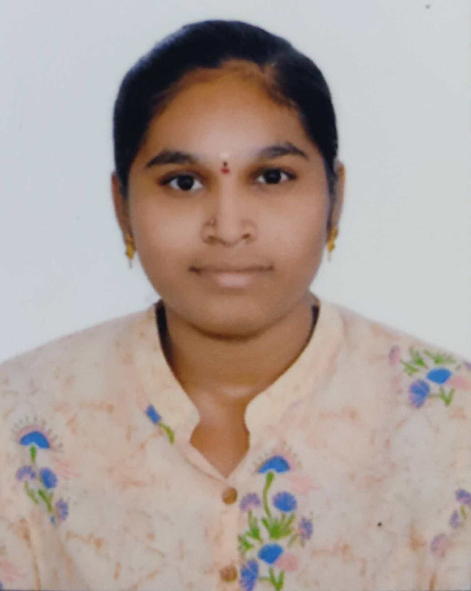

 Anitha Sri Chidhrala Email:anithasrichidhrala@gmail.com contact:1234567890 Address:Hyderbad
Career Objective:
I am Enthusiastic and motivated recent graduate eager to kickstart a career in the dynamic world of IT. With a solid academic background in Information Technology, I am equipped with the foundational skills necessary to excel in the field. I bring a fresh perspective, a strong work ethic, and a hunger for learning and growth. Ready to contribute my energy and dedication to a team that values innovation and collaboration.
Education:
Skills:
Internships:
• Cyber Security Virtual Internship - Edu Skills • Salesforce Developer Virtual Internship - SMART INTERNZES. • Data Science and Machine Learning-YBI Foundation • Job Ready Employability Skills Internship - APSCHE. • AI &ML Virtual Internship -Edu Skills
Declaration:
Place:Hyderbad Signature:Ch.Anitha Sri